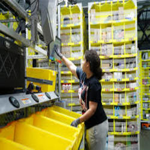
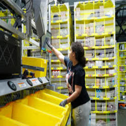

Freddy Ruano
I am Freddy Ruano. I started working for Amazon three years ago in Inbound at SNA7. Within 3 months, I was trained as a Problem solver and shortly thereafter I was promoted into the TOM team at ont9. While being in the TOM Team, I became the POC and the First Ambassador, training new hires and starting cost-efficient projects. Now I am a TSC Engagement Sr.Coordinator for ONT North Node. In addition to working 40 hours a week, I am a 4th year full-time student at UCR studying Industrial-Psychology and Statistics.
Experience
Talent Supply Chain Engagement Sr.Coordinator
• Executes hiring events based on labor projections to meet the labor order demands and fill on-time.
• Tracks and maintains statistics on effectiveness of Recruitment though weekly reports on recruiting data for presentation to HR leadership and business partners.
• Partners with Engagement Manager to support community groups such as workforce development agencies or local community colleges to leverage grassroots sourcing channels to develop talent communities to fill positions.
Transportation Operation Management
• Nominated as TOM Team's first Ambassador for on-boarding new associates into the department and being the shift’s Point of Contact for all carriers and their dispatchers.
• Generate reports using excel showing key metric improvements, product-cost analysis, and efficient labor tracking procedures.
• Instruct and coach Inbound and Outbound Operations in Yard Management System (YMS) through verbal and written communication.
Inbound Problem Solver
• Participated in Operational Excellence initiatives such as updating SOP’s, supported management with daily departmental duties, identified and addressed safety hazards within the work area, and lead meetings with fulfillment associates to drive productivity goals.
• Ensured successful area productivity through tracking, reporting, and associate performance.
• Assisted problem solve as an associate resource, trained associates, and verified SOP compliance.
Education
UC Riverside
Portfolio


